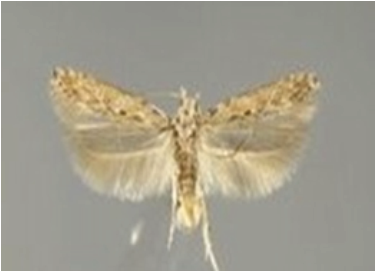

Agriculture for Secondary Schools
Figure 5.5 (a): potato tubers damaged by
Figure 5.5 (b) adult moth
moth larvae
Management: This pest can be managed through crop rotation, deep planting
(10 cm), compact hilling, destruction of infested plant material, proper storage,
and use of recommended insecticides. Healthy plants and clean seeds are
recommended because infested seed tubers are the leading cause of re-infestation
in the field.
Diseases management
Round potato is susceptible to various diseases that result in reduced yield and
lower quality of the potato tubers. Early and late blight potato diseases, bacterial
wilt, and viral diseases are the most harmful. Round potato diseases can be
controlled by using resistant planting materials, crop rotation, removing residues
in the field, and integrating different management practices.
(a) Late blight
Late blight (Figure 5.6) is one of
the most destructive fungal diseases
of round potatoes caused by the
pathogen Phytophthora infestans.
Cool, moist conditions favour this
fungus and can lead to significant
yield losses if not managed properly.
Figure 5.6: Late blight in potato leaf, stem, and
tuber
79
Student’s Book Form Two